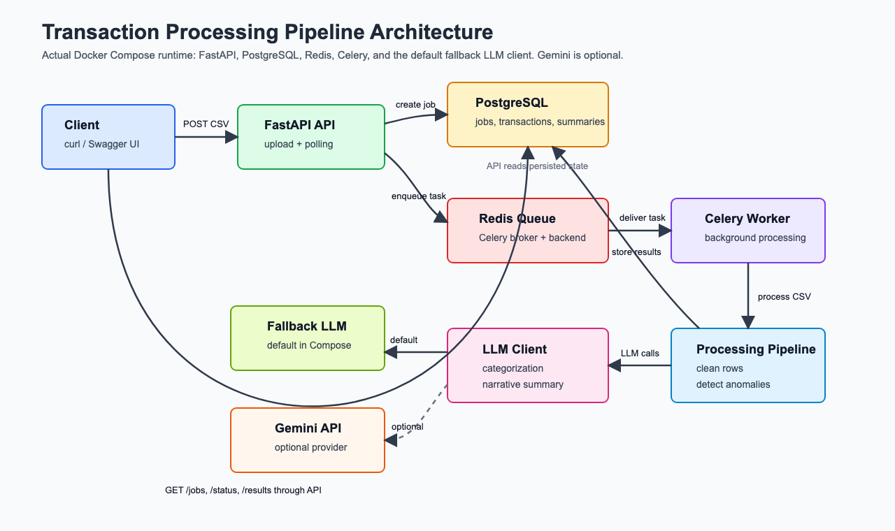

Executive Summary
This project implements an end-to-end backend pipeline that accepts financial transaction CSV uploads, processes them asynchronously, and exposes job status and final results through a REST API.
The system is designed for reviewer-friendly execution with Docker Compose. Running
docker compose up --build starts the API, worker, PostgreSQL database, and Redis broker
without requiring local Python setup, manual database creation, or environment files for the default path.
Problem Statement
Financial transaction exports are often inconsistent: dates appear in mixed formats, amounts contain symbols or separators, categories can be missing, records may be duplicated, and suspicious transactions need to be highlighted for review. The objective of this project is to convert such raw CSV input into normalized, queryable, and review-ready transaction intelligence.
System Architecture

Figure 1: Queue-backed transaction processing architecture.
| Component | Responsibility |
|---|---|
| FastAPI API | Validates CSV uploads, creates jobs, queues processing tasks, and serves job status/results. |
| PostgreSQL | Stores job metadata, cleaned transaction rows, anomaly details, and summary payloads. |
| Redis | Acts as the Celery broker and result backend for asynchronous processing. |
| Celery Worker | Runs CSV cleaning, anomaly detection, category classification, and summary generation outside the request path. |
| LLM Client | Provides category classification and summary generation via deterministic fallback, Gemini, or Ollama. |
Request Lifecycle
- The client uploads a CSV to
POST /jobs/upload. - The API validates the file type and UTF-8 content, creates a pending job, and enqueues a Celery task.
- The worker marks the job as processing, cleans the CSV rows, detects anomalies, and classifies missing categories.
- The worker stores cleaned transactions and a job summary in PostgreSQL.
- The client polls
GET /jobs/{job_id}/statusor reads full output fromGET /jobs/{job_id}/results.
API Surface
| Endpoint | Purpose | Response Highlights |
|---|---|---|
GET /health |
Confirms API availability. | {"status":"ok"} |
POST /jobs/upload |
Accepts a CSV and starts asynchronous processing. | job_id and initial pending status. |
GET /jobs |
Lists submitted jobs, optionally filtered by status. | Job id, status, filename, row counts, creation time. |
GET /jobs/{job_id}/status |
Returns current state and summary once available. | Raw and cleaned row counts, error message, totals, risk level. |
GET /jobs/{job_id}/results |
Returns full processed output. | Cleaned transactions, flagged anomalies, category spend, LLM summary. |
Data Processing Logic
Cleaning Rules
- Drops exact duplicate rows.
- Parses
DD-MM-YYYY,YYYY/MM/DD, andYYYY-MM-DDdates. - Removes dollar signs and comma separators from amounts.
- Converts invalid or blank amounts to
0.00. - Normalizes currency and status to uppercase.
- Marks blank categories for classification.
Anomaly Rules
- Flags account-level amounts greater than three times the account median.
- Flags USD transactions at domestic-only merchants such as Swiggy, Ola, IRCTC, Zomato, and Jio Recharge.
- Flags notes that mention suspicious activity.
- Stores human-readable anomaly reasons on each transaction.
LLM and Fallback Strategy
The project uses an LLM-compatible client for category classification and summary generation. Docker Compose
sets LLM_PROVIDER=fallback, so the default run is deterministic and does not require network
access or API keys. The same interface supports Gemini and Ollama through configuration.
| Capability | Implementation Detail |
|---|---|
| Classification | Missing categories are batched, classified against an allowed set, and invalid labels are mapped to Other. |
| Summary | Produces spend totals by currency, top merchants, anomaly count, narrative text, and risk level. |
| Resilience | External calls retry up to three times with exponential backoff. Failed classifications are preserved with llm_failed. |
Database Design
| Table | Key Fields | Purpose |
|---|---|---|
jobs |
id, filename, status, row counts, timestamps, error message |
Tracks lifecycle and execution metadata for each uploaded CSV. |
transactions |
Merchant, amount, currency, status, category, anomaly fields, LLM metadata | Stores each cleaned transaction linked to its job. |
job_summaries |
Total spend, top merchants, risk level, category spend, raw summary JSON | Stores aggregated output and narrative summary for fast retrieval. |
SQLAlchemy metadata initializes the database tables at application startup, which keeps the assignment simple to run from a clean Docker volume.
Deployment and Operations
The full stack is defined in docker-compose.yml. The API and worker use the same application image,
while PostgreSQL and Redis run from official Alpine images. PostgreSQL includes a health check so the API and
worker wait for the database before starting.
docker compose up --build
For a clean reset, the persisted database volume can be removed and recreated:
docker compose down -v docker compose up --build
Testing and Quality
The repository includes a focused processing test that validates duplicate removal, date parsing,
currency/status normalization, fallback category classification, and anomaly detection. This covers the
riskiest core transformation behavior in app/processing.py.
pytest
Strengths
- Clear service separation between API request handling and background processing.
- Dockerized reviewer experience with minimal setup friction.
- Durable job and result storage instead of in-memory state.
- Deterministic fallback behavior for reliable local demonstrations.
- Human-readable anomaly explanations preserved in the output model.
- Extensible provider pattern for external LLM integrations.
Future Enhancements
- Add Alembic migrations for production-grade schema evolution.
- Add authentication and per-user job isolation.
- Improve anomaly scoring with merchant, account, and time-window baselines.
- Add API-level integration tests with a test database and worker execution path.
- Add observability through structured logs, metrics, and task tracing.
- Expose downloadable CSV or JSON reports for completed jobs.
Conclusion
The AI-Powered Transaction Processing Pipeline demonstrates a practical backend architecture for asynchronous financial data processing. It combines robust CSV normalization, anomaly detection, LLM-compatible enrichment, persistent storage, and Docker-based deployment into a cohesive system that is easy to run and evaluate.